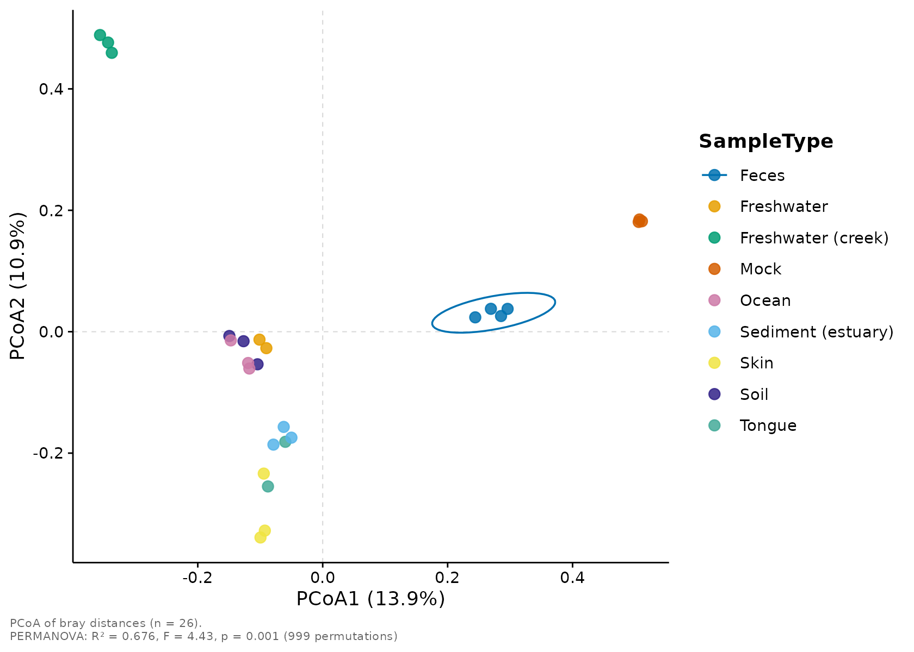
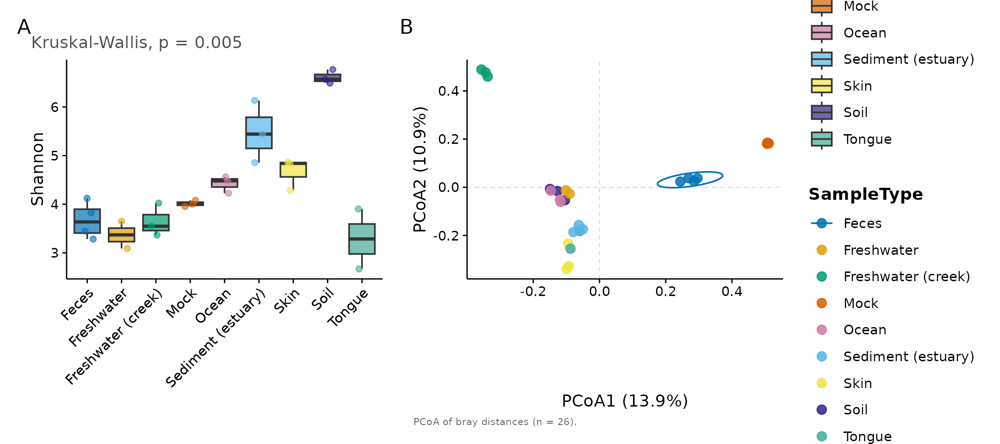
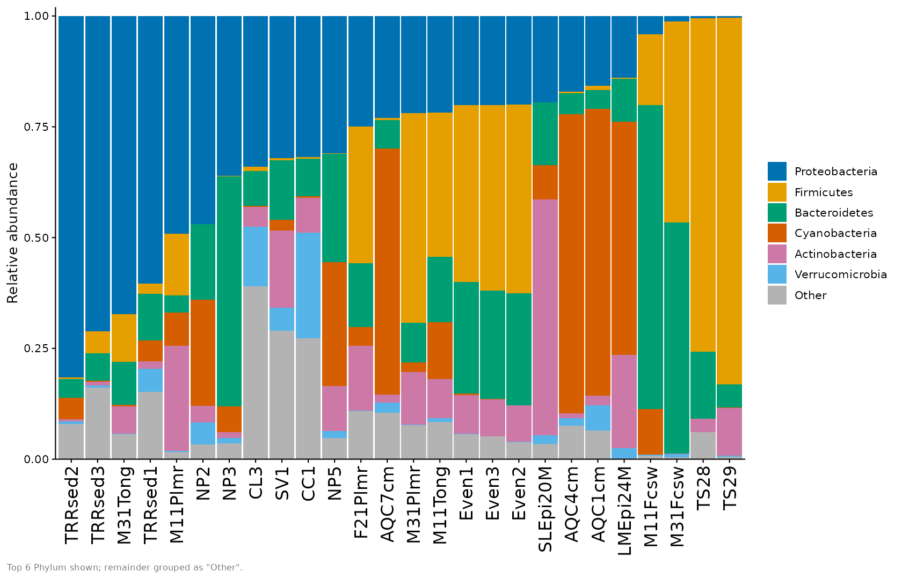

micropubr turns a phyloseq object into a
publication-ready figure with a single, consistent call. Every function
returns a ggplot2 object, so you can always extend the
result with +.
library(micropubr)
#> micropubr 0.3.0 — publication-ready microbiome figures.
#> See `vignette("getting-started", package = "micropubr")` to begin.
data(GlobalPatterns, package = "phyloseq")
# Work with a lightly filtered subset for speed.
gp <- phyloseq::prune_taxa(
phyloseq::taxa_sums(GlobalPatterns) > 5, GlobalPatterns)Alpha diversity
mp_alpha() computes within-sample diversity and, when a
grouping variable is supplied, adds the appropriate statistical test
automatically.
mp_alpha(gp, measure = c("Shannon", "Observed"),
group.by = "SampleType", test = "kruskal")
#> Warning: Group(s) Feces (n = 4), Freshwater (n = 2), Freshwater (creek) (n =
#> 3), Mock (n = 3), Ocean (n = 3), Sediment (estuary) (n = 3), Skin (n = 3), Soil
#> (n = 3), Tongue (n = 2) have fewer than 5 samples; group comparisons have
#> little power and their p-values are unstable at this size.
#> Warning: Sequencing depth varies 40-fold across samples; richness (Observed)
#> depends strongly on depth, so consider rarefying or comparing at equal
#> coverage.
Switch to violins, or draw rarefaction curves, with
plot.type:
mp_alpha(gp, plot.type = "rarefaction", group.by = "SampleType")
Beta diversity
mp_ordination() computes the distance, runs the
ordination, draws group ellipses, and reports a PERMANOVA in the caption
— all by default.
mp_ordination(gp, method = "PCoA", distance = "bray", group.by = "SampleType")
#> Warning: Group(s) Feces (n = 4), Freshwater (n = 2), Freshwater (creek) (n =
#> 3), Mock (n = 3), Ocean (n = 3), Sediment (estuary) (n = 3), Skin (n = 3), Soil
#> (n = 3), Tongue (n = 2) have fewer than 5 samples; group comparisons have
#> little power and their p-values are unstable at this size.
#> Warning: Group dispersions differ (PERMDISP p = 0.002); a significant PERMANOVA
#> may reflect differences in spread rather than in location (centroids).
The compositional (Aitchison) workflow is one argument away:
mp_ordination(gp, method = "PCA", group.by = "SampleType")
Taxonomic composition
mp_taxa() shows the top taxa at any rank and collapses
the rest into “Other”.
mp_taxa(gp, tax.level = "Phylum", group.by = "SampleType", top.n = 8)
Differential abundance
mp_diff() visualises results from DESeq2,
ALDEx2, ANCOM-BC or any generic data frame.
Here is a volcano plot from a generic table:
set.seed(1)
res <- data.frame(
feature = paste0("ASV", 1:200),
log2FC = rnorm(200, 0, 2),
pvalue = runif(200)^2
)
res$log2FC[1:20] <- rnorm(20, 4, 0.5) * sample(c(-1, 1), 20, TRUE)
res$pvalue[1:20] <- runif(20, 1e-9, 1e-4)
res$padj <- p.adjust(res$pvalue, "BH")
mp_diff(res, plot.type = "volcano", label.top = 8)
Composing and exporting figures
Combine panels into a labelled multi-panel figure and export it at a journal column width.
fig <- mp_combine(
mp_alpha(gp, measure = "Shannon", group.by = "SampleType"),
mp_ordination(gp, group.by = "SampleType", permanova = FALSE),
ncol = 2, tag.levels = "A"
)
#> Warning: Group(s) Feces (n = 4), Freshwater (n = 2), Freshwater (creek) (n =
#> 3), Mock (n = 3), Ocean (n = 3), Sediment (estuary) (n = 3), Skin (n = 3), Soil
#> (n = 3), Tongue (n = 2) have fewer than 5 samples; group comparisons have
#> little power and their p-values are unstable at this size.
fig
mp_export(fig, "figure1.pdf", column = "double", dpi = 600)Theming and palettes
All functions accept a theme and palette
argument. The defaults are colourblind-safe, but you can swap them
freely:
mp_taxa(gp, tax.level = "Phylum", top.n = 6,
palette = "taxa20", theme = mp_theme_nature())
See ?mp_palette and the mp_theme_*() family
for the full set.
Interactive plots
Add interactive = TRUE to any plotting function to get a
live plotly widget
instead of a static ggplot — hover for tooltips, zoom, and
toggle groups via the legend. The figure below is interactive when the
plotly package is installed:
mp_ordination(gp, method = "PCoA", distance = "bray",
group.by = "SampleType", interactive = TRUE)
#> Warning: Group(s) Feces (n = 4), Freshwater (n = 2), Freshwater (creek) (n =
#> 3), Mock (n = 3), Ocean (n = 3), Sediment (estuary) (n = 3), Skin (n = 3), Soil
#> (n = 3), Tongue (n = 2) have fewer than 5 samples; group comparisons have
#> little power and their p-values are unstable at this size.
#> Warning: Group dispersions differ (PERMDISP p = 0.002); a significant PERMANOVA
#> may reflect differences in spread rather than in location (centroids).Interactive figures save to a self-contained web page via the same
mp_export(), using an .html filename:
w <- mp_alpha(gp, measure = "Shannon", group.by = "SampleType",
interactive = TRUE)
mp_export(w, "alpha.html")The visualization gallery vignette
has more interactive examples. Note that plotly cannot
reproduce a few static-only overlays (such as significance brackets),
and the circular mp_chord() / mp_circos()
figures have no interactive mode.